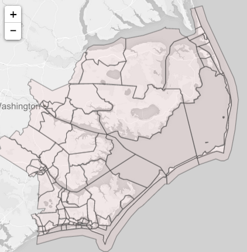
Description: This Leaflet map uses the Census Reporter API to obtain geographic data about census tracts for North Carolina from the Census Bureau.
A clickable, county-level map of North Carolina controls a second map that automatically pans to the census tracts composing the selected county.
Data: The GeoJson data used to create the state, county, and census tract layers comes from the US Census Bureau and is accessed using the Census Reporter API.
See North Carolina Census Tract Map
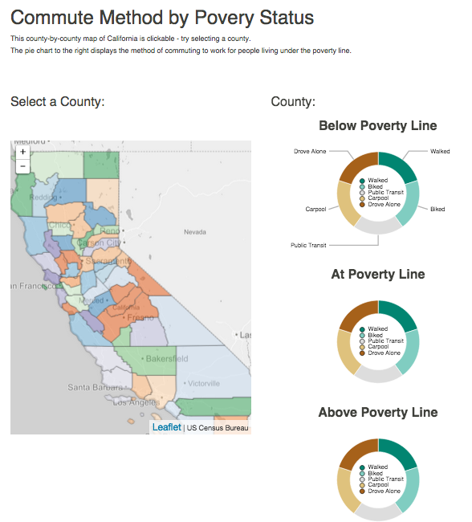
Description: Uses a Leaflet map of California counties to control a D3 plot and send data to it dynamically based on the user selection.
Data: The data set used is commute method by poverty status, a data set from the US Census Bureau.
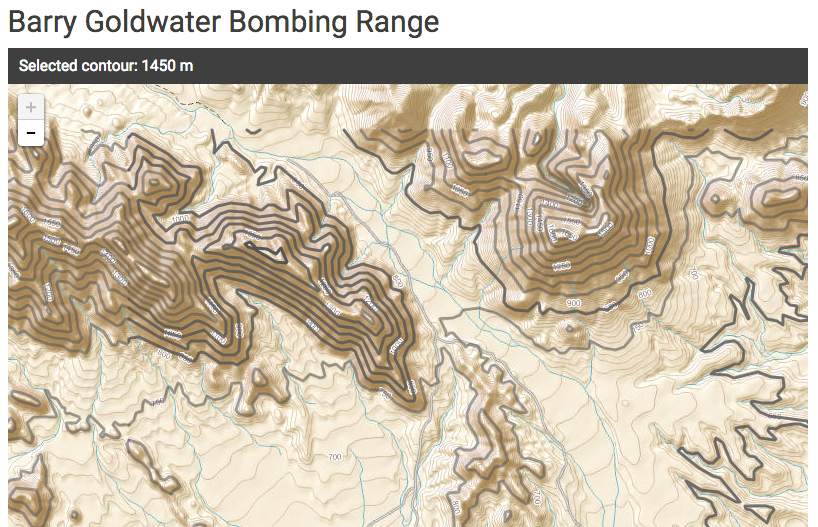
Description: Combines a tileset with contours from a shapefile, for the purpose of enhancing or calling out particular topological elevations or features.
Data: This uses a tileset from the National Map Viewer, and topological shapefiles that are also from the National Map Viewer.
See Barry Goldwater Bombing Range Topo Map
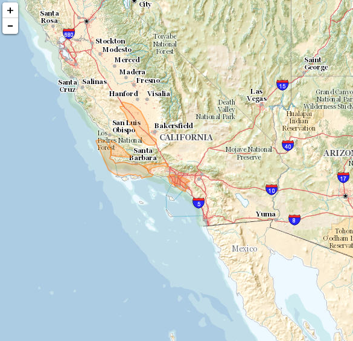
Description: A leaflet using National Map Viewer topological map tileset for mapping a dataset (shale gas plays dataset).
Data: This uses a tileset of contours in the United States - the same tileset that is provided by the National Map Viewer.
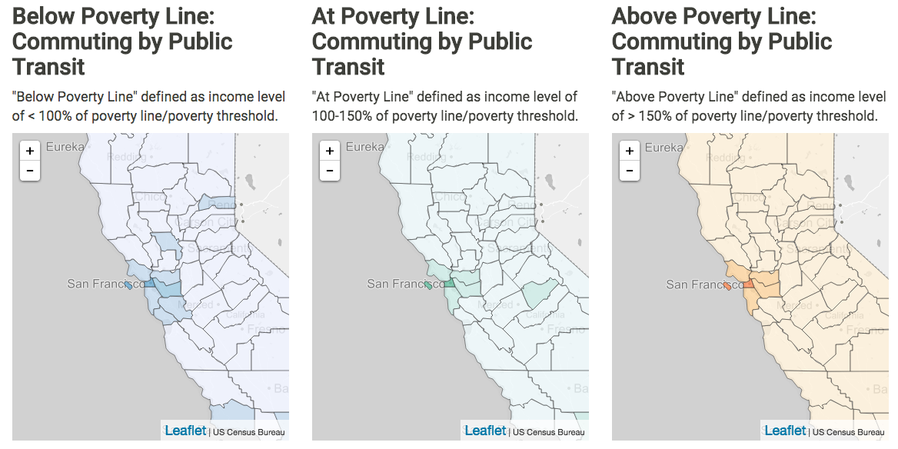
Description: This map is my first quantile map using US Census data. This visualizes US Census Table B08122, officially titled, "Means of Transportation to Work by Poverty Status," compares two variables: means of transportation, and ratio of income to poverty line.
Data: The data was obtained from the Census Bureau, delivered via the Census Reporter API. The map data is stored in a local GeoJson file and served up by this web server.
CA Means of Transportation by Poverty
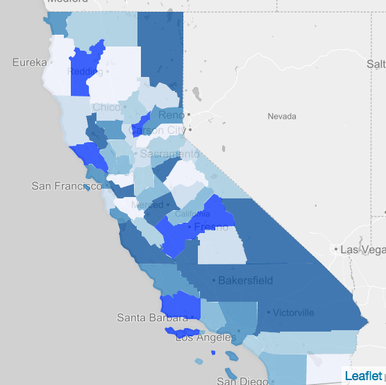
Description: A map visualizing a random quantity for each California county.
Data: The data was obtained from the Census Bureau, delivered via the Census Reporter API. The map data is stored in a local GeoJson file and served up by this web server.
California County Quantile Map
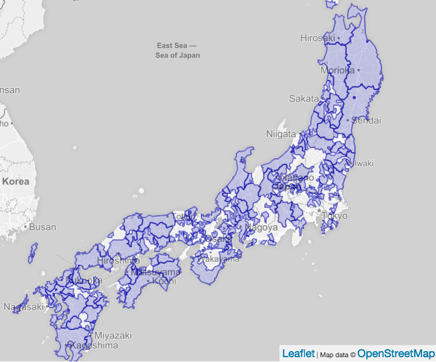
Description: A map of the boundaries of daimyos in feudal Japan, 1664 CE. The shapefile was uploaded to and is served up by a Geoserver instance, and is visualized on a map using Leaflet.js.
Data: The data was obtained from the Tokugawa Japan Data Archive web site at Harvard University.
Feudal Japan Daimyo Boundaries Map (1664)
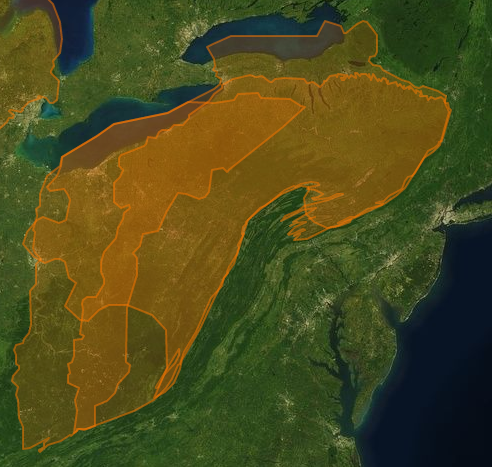
Description: A map of shale gas plays in the United States, from Shapefile data provided by the EIA. This data is provided by a custom Geoserver. The Shapefile data was added to and is served up by a Geoserver instance, and is visualized using Leaflet.js.
Data: The data was originally provided by the EIA, and was then added to the EIA-Oil-Gas-Maps repository on GitHub, by @talllguy.
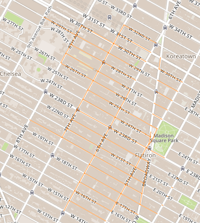
Description: My first Leaflet.js map, showing about 100 streets of New York City. The map uses MapBox and a custom Geoserver setup (see charlesreid1.com for more info).
Data: The data on this map were provided by a Geoserver tutorial.
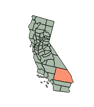
Description: This slaps together a simple map of California using D3. This was a very different process from the one used to create a Leaflet.
Data: This uses the same dataset as before, of California county boundary information obtained from the US Census Bureau via the Census Reporter API.
Description: A topo map of the Barry Goldwater bombing range in southwestern Arizona. The map is made with D3.
Data: Uses shapefile data from the National Map Viewer, translated into TopoJson. See charlesreid1 wiki.
See Goldwater Bombing Range Map
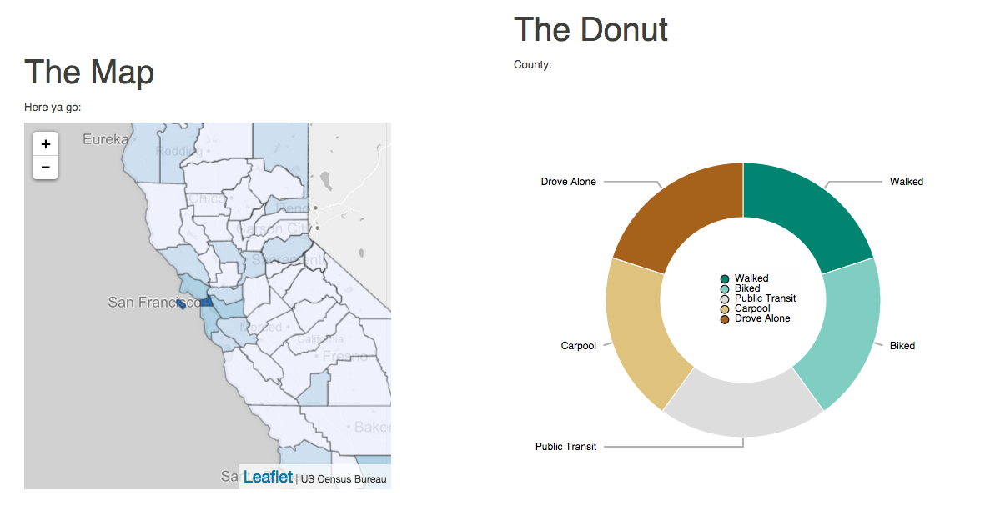
Description: Uses a Leaflet map of California counties to control a D3 plot and send data to it dynamically based on the user selection.
Data: The data set used is commute method by poverty status, a data set from the US Census Bureau.